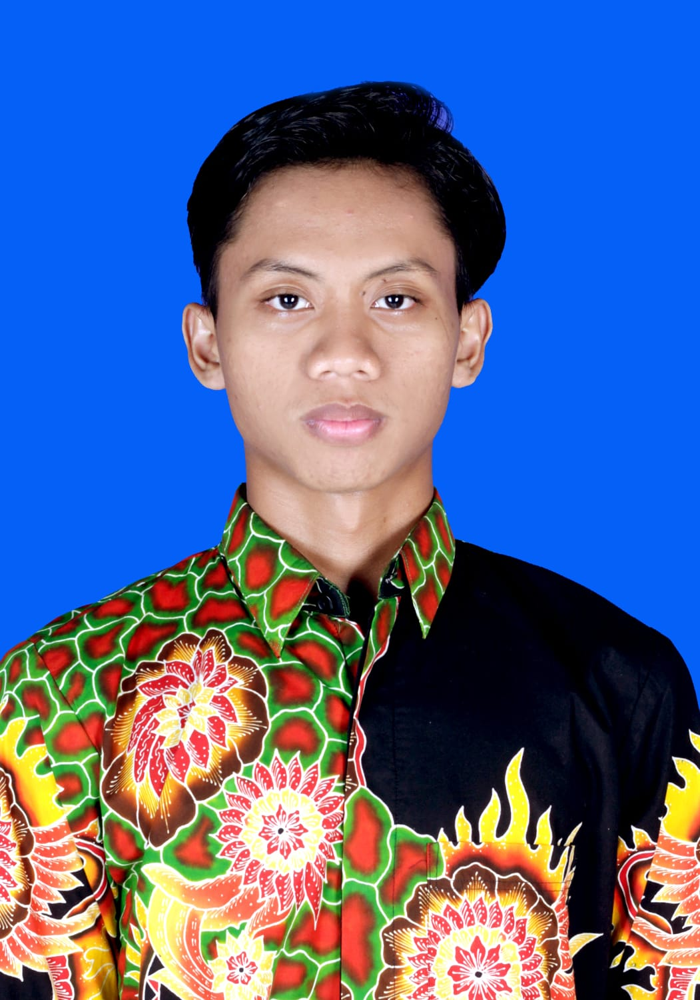

Informasi Pribadi
| Nama Lengkap |
: Arifin Abdillah |
| Tempat Tanggal Lahir |
: Sumenep, 16 Agustus 2004 |
| Agama |
: Islam |
| Kebangsaan |
: Indonesia |
| Alamat |
: Jl. Letnan Merta, 9c , Karangduak , Sumenep |
| Nomor Telepon |
: 085785746709 |
| Email |
: arifinabdillah259@gmail.com |
Ringkasan Profil
Saya seorang lulusan SMA yang ambisius dan bersemangat, saya memiliki tekad yang kuat untuk meraih kesuksesan didalam karir saya.
Saya memiliki latar belakang pendidikan yang kuat dan keterampilan yang berkembang serta berkomitmen untuk belajar dan tumbuh secara profesional
Riwayat Pendidikan
- S1 Sistem Informasi - Universitas Trunojoyo Madura (2023-sekarang)
- SMK Negeri 1 Sumenep (2020-2023)
- SMP Negeri 2 Sumenep (2017-2020)
- SDN Karangduak 1 Sumenep (2011-2017)
Pengalaman Kerja
- Saya pernah magang di Kantor Kementrian Agama - (4 Bulan)
- Saya pernah magang di Kantor DPR - (3 Bulan)
Sertifikasi dan Pelatihan
- Sertifikat Uji Kompetensi Keahlian Rekayasa Perangkat Lunak - tahun 2023
Aktivitas dan Penghargaan Tambahan
- Purna Paskibraka Kabupaten Sumenep Tahun 2021